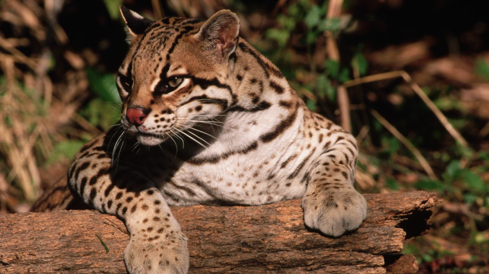

Especies Amenazadas del Caño Tigre

Caimán Llanero
En peligro crítico por la caza ilegal y la destrucción de su hábitat natural debido a la contaminación de los ríos y caños.

Tigre de Ocelote
El Tigre de Ocelote es un felino que habita en los bosques tropicales y subtropicales, y se encuentra en peligro debido a la pérdida de su hábitat y la caza furtiva. En la región del Meta en Caño Tigre, este hermoso felino está siendo protegido por iniciativas de conservación debido a su importancia en el equilibrio ecológico.

Oso Palmero
Amenazado por la deforestación y la caza furtiva, que afectan su capacidad para encontrar alimento y refugio.